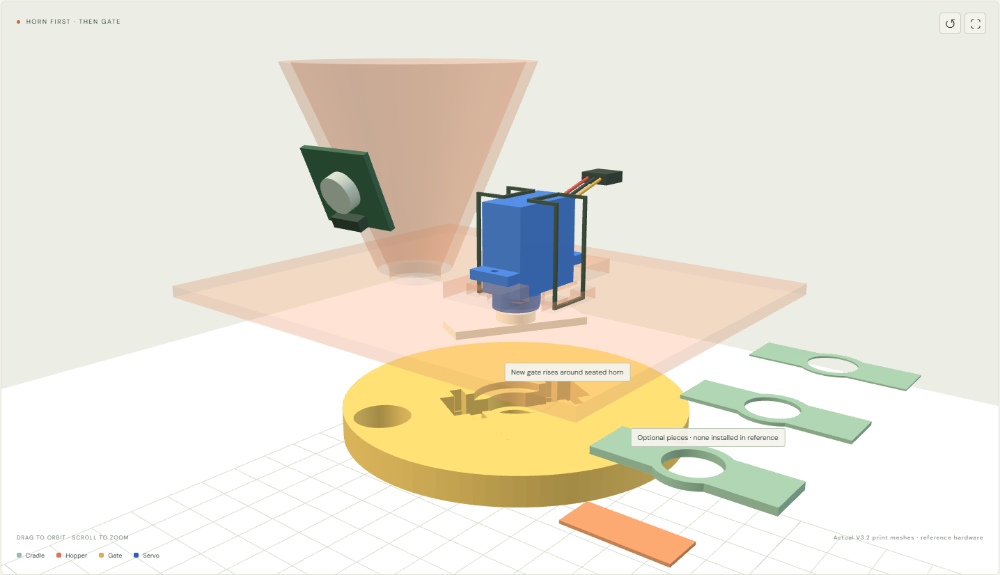

Assemble the latest prints. Keep your existing stand.
Replace only the hopper and gate. This complete sequence uses 08_HOPPER_ORIGINAL_SERVO_HEIGHT_V3_2 and 09_GATE_ADJUSTABLE_HORN_V3_2, with optional packing and the removable assembly strip. Retain the stand, lid, both clips, electronics, supplied horn and screw.
The repair plate contains six pieces: hopper, gate, three optional packing rings (0.4 / 0.8 / 1.6 mm), and a 0.6 mm strip that is removed before operation. A1 stock 0.4 mm nozzle, matching PETG preset, 0.20 mm Standard, 3 walls, 5 top/bottom layers, 15% gyroid, supports off. Keep supplied orientation; the 3MF contains geometry/layout only. The earlier 86.64 g / 3 h 22 min estimate was sliced at 20%; your 15% estimate will differ.
STEP 01 / 17
Identify the V3.2 repair prints
Use the latest repair plate; reuse the stand, lid and both locking clips.
Rendered from the actual V3.2 print meshes. Horn/socket and electronics are reference illustrations, physically unverified. Open this animated step ↗
The small gearbox tail points toward the long case side and farther ear support. The rectangular case enters the shallow clearance pocket.
Rest both ears flat on the original-height supports. Do not add servo-ear shims or spacers.
Use one tie through each same-side slot pair. Upper runs bear on the case edges; lower runs sit in the longitudinal underside channels. Keep ties off the shaft.
STEP 04 / 17
Attach the vibration module
Mount the existing 5V PWM driver module on the outside of the hopper.
Use three male–male leads: one end in each correctly identified servo-socket cavity, the other in its named breadboard hole. Keep inserted pins insulated and seated.
Rendered from the actual V3.2 print meshes. Horn/socket and electronics are reference illustrations, physically unverified. Open this animated step ↗
Fully seat its spline socket without forcing it. The horn never passes through the hopper opening.
Gently secure the horn with its supplied centre screw. Do not use the screw to pull a partly seated or interfering horn into place.
Keep the printed gate separate for now. The centre opening of the new gate leaves access to this screw later.
STEP 12 / 17
Fit the new gate and optional packing
Exploded alignment before lifting: the horn is already seated on the shaft. Packing pieces beside the head are optional and not installed in this reference.

Lift the V3.2 gate around the already seated horn, then secure the horn arms to its pocket floor.
Rendered from the actual V3.2 print meshes. Horn/socket and electronics are reference illustrations, physically unverified. Open this animated step ↗
Start with no packing. Put the arms in the long pocket, with their flat outer faces toward the floor; align a closed gate position before fastening.
Aim for a free 0.4–0.8 mm gate gap. If it rubs, remove the gate and add the smallest needed combination of 0.4 / 0.8 / 1.6 mm packing under the arms. Packing lowers the gate; it is not a servo-ear spacer.
Use two ties in the gate’s upper/lower cross-grooves to clamp the arms and any packing. Tighten evenly without bowing the gate; keep the horn fully seated.
STEP 13 / 17
Seat the completed hopper head
Lower the hopper flange into the retained stand pocket with the gate attached beneath it.
Rendered from the actual V3.2 print meshes. Horn/socket and electronics are reference illustrations, physically unverified. Open this animated step ↗
Verify no rubbing, trapped tie, stalled servo or unseated horn. Set actual open/closed limits in the controller.
CAD uses 0° aligned-open and 60° nominal closed; the 14 mm holes already stop overlapping near 23.1° relative rotation.
Only after empty checks, add a small flour charge and the retained lid. Enable vibration only after its input check.
STEP 17 / 17
Run a short dose and weigh
Arm a short supervised dose, then close the gate and let the scale settle.
Rendered from the actual V3.2 print meshes. Horn/socket and electronics are reference illustrations, physically unverified. Open this animated step ↗
Start small. The controller limits a dose to 5 seconds and disarms after 60 seconds.
Stop vibration before reading the scale. It has no electronic connection to the ESP32; dosing remains timed.
Record actual delivery before pursuing larger doses with ±10 mg accuracy. The visual motion is not a powder-flow simulation.
What this guide establishes
Latest print geometry and assembly order are consistent with the V3.2 fit reference. Numeric collision checks, the motion viewer and rendered pictures do not validate actual purchased-unit dimensions, PETG fit/retention, electrical supply/input compatibility or flour accuracy. Current target is larger doses with ±10 mg accuracy, not a demonstrated result. Accuracy assessment · Reference collision audit.